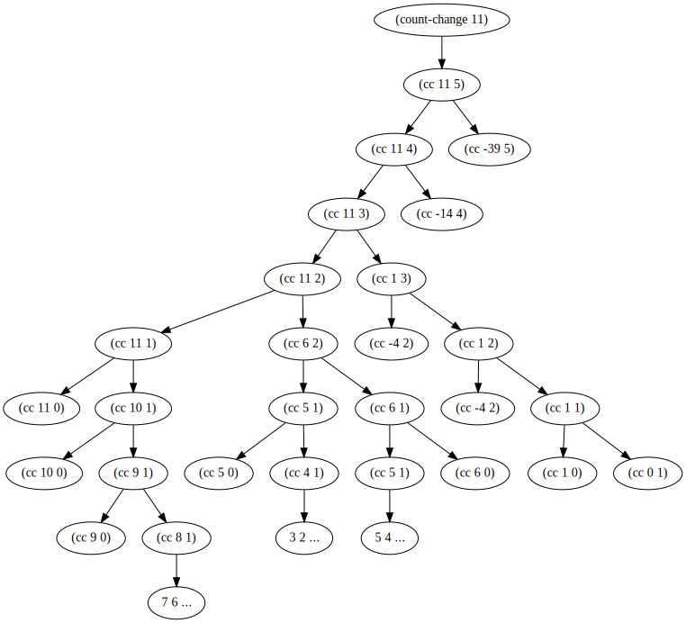

第一章： 构造过程抽象 解题集
Table of Contents
- 1. 练习 1.1
- 2. 练习 1.2
- 3. 练习 1.3
- 4. 练习 1.4
- 5. 练习 1.5
- 6. 练习 1.6
- 7. 练习 1.7
- 8. 练习 1.8
- 9. 练习 1.9
- 10. 练习 1.10
- 11. 练习 1.11
- 12. 练习 1.12
- 13. 练习 1.13
- 14. 练习 1.14
- 15. 练习 1.15
- 16. 练习 1.16
- 17. 练习 1.17 & 1.18
- 18. 练习 1.19
- 19. 练习 1.20
- 20. 练习 1.21
- 21. 练习 1.22
- 22. 练习 1.23
- 23. 练习 1.24
- 24. 练习 1.25
- 25. 练习 1.26
- 26. 练习 1.27
1 练习 1.1
10 ;; answer: 10 (+ 5 3 4) ;; answer: 12 (- 9 1) ;; answer: 8 (/ 6 2) ;; answer: 3 (+ (* 2 4) (- 4 6)) ;; answer: 6 (define a 3) ;; answer: a (define b (+ a 1)) ;; answer: b (+ a b (* a b)) ;; answer: 19 (= a b) ;; answer: #f (if (and (> b a) (< b (* a b))) b a) ;; answer: 4 (cond ((= a 4) 6) ((= b 4) (+ 6 7 a)) (else 25)) ;; answer: 16 (+ 2 (if (> b a) b a)) ;; answer: 6 (* (cond ((> a b) a) ((< a b) b) (else -1)) (+ a 1)) ;; answer: 16
2 练习 1.2
$$\frac{5+4+(2-(3-(6+\frac{4}{5})))}{3*(6-2)*(2-7)}$$
;; answer: (\ (+ 5 4 (- 2 (- 3 (+ 6 (\ 4 5))))) (* 3 (- 6 2) (- 7 2)))
3 练习 1.3
(define (summax a b c) (cond ((> a b) (cond ((> b c) (+ a b)) (else (+ a c)))) (else (cond ((> a c) (+ b a)) (else (+ b c))))))
4 练习 1.4
略
5 练习 1.5
(define (p) (p)) (define (test x y) (if (= x 0) 0 y)) （test 0 (p)） ;; answer: ;; 正则序求值返回0; ;; 应用序求值会出现无限递归调用。
6 练习 1.6
(define (new-if predicate then-clause else-clause) (cond (predicate then-clause) (else else-clause))) (define (new-sqrt-iter guess x) (new-if (good-enough? guess x) guess (new-sqrt-iter (improve guess x) x))) ;; answer: ;; 会出现无限递归调用。 ;; 原因是：按照应用序求值，每个参数都会先进行求值。所以不管是true，还是false else-clause都会被执行。进而导致无限递归。 ;; 而if为特殊的过程then-clause和else-clause只会执行一个。 ;; 验证的表达式： ;; (new-if #t (list 0 (display "true")) (display "false")) ;; 返回结果为： ;; (new-if): truefalse(0 #<void>) ;; (if): true(0 #<void>)
7 练习 1.7
;; answer (define (new-good-enough? new-guess old-guess) (< (abs (- new-guess old-guess)) 0.00000001))
8 练习 1.8
;; answer: (define (cube-iter guess x) (if (cube-good-enough? guess x) guess (cube-iter (improve-cube guess x) x))) (define (improve-cube guess x) (/ (+ (/ x (square guess)) (* 2 guess)) 3)) (define (cube-good-enough? guess x) (< (abs (- (* guess guess guess) x)) 0.0001)) (define (cube x) (cube-iter 1.0 x))
9 练习 1.9
;; answer: ;; 方法一为线性递归计算过程，展开式如下： （+ 4 5） (inc (+ 3 5)) (inc (inc (+ 2 5))) (inc (inc (inc (+ 1 5)))) (inc (inc (inc (inc (+ 0 5))))) (inc (inc (inc (inc 5)))) (inc (inc (inc 6))) (inc (inc 7)) (inc 8) 9 ;; 方法二为递归迭代计算过程，展开式如下： （+ 4 5） （+ 3 6） （+ 2 7） （+ 1 8） （+ 0 9） 9
10 练习 1.10
(define (A x y) (cond ((= y 0) 0) ((= x 0) (* 2 y)) ((= y 1) 2) (else (A (- x 1) (A (- y 1)))))) (A 1 10) (A 2 4) (A 3 3) (define (f n) (A 0 n)) (define (g n) (A 1 n)) (define (h n) (A 2 n)) (define (k n) (* 5 n n))
- answer:
- 210
- 216
- 216
- f(n)=2n
- g(n)=2n
- h(n)=22n
- k(n)=5n2
11 练习 1.11
;; answer: ;; 递归计算过程实现 (define (f n) (cond ((< n 3) n) (else (+ (f (- n 1)) (* 2 (f (- n 2))) (* 3 (f (- n 3))))))) ;; 迭代计算过程实现 (define (f-iter n) (define (iter a b c count) (cond ((= count 0) a) (else (iter b c (+ (* 3 a) (* 2 b) c) (- count 1))))) (iter 0 1 2 n))
12 练习 1.12
;; answer: ;; 递归计算过程实现 (define (pascal row col) (cond ((> col row) (error "illegal col value!")) ((or (= col 0) (= row col)) 1) (else (+ (pascal (- row 1) (- col 1)) (pascal (- row 1) col))))) ;; 迭代计算过程实现 (define (pascal-iter row col) (define (factorial-iter value counter n) (cond ((= counter n) value) (else (factorial-iter (* value (+ counter 1)) (+ counter 1) n)))) (cond ((> col row) (error "illegal col value!")) ((or (= col 0) (= row col)) 1) (else (/ (factorial-iter 1 1 row) (* (factorial-iter 1 1 col) (factorial-iter 1 1 (- row col)))))))
13 练习 1.13
略
14 练习 1.14

15 练习 1.15
\(sinx=3sin\frac{x}{3}-4sin^3\frac{x}{3}\)
(define (cube x) (* x x x)) (define (p x) (- (* 3 x) (* 4 (cube x)))) (define (sine angle) (if (< (abs angle) 0.1) angle (p (sine (/ angle 3.0))))) ;; answer: ;; a) ;; (sine 12.15) ;; (p (sine 4.5)) ;; (p (p (sine 1.5))) ;; (p (p (p (sine 0.5)))) ;; (p (p (p (p (sine 0.166666))))) ;; (p (p (p (p (p (p (sine 0.0555555))))))) ;; p被执行了6次； ;; b) ;; Θ(n)
16 练习 1.16
;; answer: (define (fast-expt-iter b n) (cond ((= n 0) 1) ((even? n) (fast-expt-iter (square b) (/ n 2))) (else (* b (fast-expt-iter b (- n 1))))))
17 练习 1.17 & 1.18
(define (double a) (+ a a)) (define (halve a) (/ a 2)) (define (fast-* a b) (cond ((or (= b 0) (= a 0)) 0) ((even? b) (fast-* (double a) (halve b))) (else (+ a (fast-* a (- b 1))))))
18 练习 1.19
Fib矩阵公式： $$\begin{pmatrix}fib(n)\\fib(n+1)\end{pmatrix}=\begin{pmatrix}0&1\\1&1\end{pmatrix}^n\begin{pmatrix}0\\1\end{pmatrix}$$ 变换说明： $$\begin{pmatrix}p&q\\q&p+q\end{pmatrix}\begin{pmatrix}a\\b\end{pmatrix}=\begin{pmatrix}ap+bq\\aq+bp+bq\end{pmatrix}=>\begin{cases}a&\leftarrow\ bq+ap+aq, \\ b&\leftarrow\ bp+aq. \end{cases}$$
- answer:
- 证明：
$$\begin{pmatrix}p&q\\q&p+q\end{pmatrix}\begin{pmatrix}p&q\\q&p+q\end{pmatrix}=\begin{pmatrix}p^2+q^2&2pq+q^2\\2pq+q^2&p^2+2q^2+2pq\end{pmatrix}$$ 所以：p'=p2+q2; q'=2ab+b2,证毕。
(define (fib n) (fib-iter 1 0 0 1 n)) (define (fib-iter a b p q count) (cond ((= 0 count) b) ((even? count) (fib-iter a b (+ (square p) (square q)) (+ (* 2 p q) (square q)) (/ count 2))) (else (fib-iter (+ (* b q) (* a q) (* a p)) (+ (* b p) (* a q)) p q (- count 1)))))
19 练习 1.20
;; 正则序 (gcd 206 40) (gcd 40 (remainder 206 40)) (gcd (remainder 206 40) (remainder 40 (remainder 206 40))) (gcd (remainder 40 (remainder 206 40)) (remiander (remainder 206 40) (remainder 40 (remainder 206 40)))) (gcd (remiander (remainder 206 40) (remainder 40 (remainder 206 40))) ((remainder 40 (remainder 206 40)) (remiander (remainder 206 40) (remainder 40 (remainder 206 40))))) ;; 应用序 (gcd 206 40) (gcd 40 (remainder 206 40)) (gcd 40 6) (gcd 6 (remainder 40 6)) (gcd 6 4) (gcd 4 (remainder 6 4)) (gcd 4 2) (gcd 2 (remainder 4 2)) (gcd 2 0)
20 练习 1.21
(define (smallest-divisor n) (define (find-divisor n test-divisor) (cond ((> (square test-divisor) n) n) ((divides? test-divisor n) test-divisor) (else (find-divisor n (+ test-divisor 1))))) (define (divides? a b) (= (remainder b a) 0)) (find-divisor n 2)) (smallest-divisor 199) ;; 199 (smallest-divisor 1999) ;; 1999 (smallest-divisor 19999) ;; 7
21 练习 1.22
(define (time-prime-test n) (start-prime-time n (real-time-clock))) (define (start-prime-time n start-time) (cond ((prime? n) (newline) (display n) (report-prime (- (real-time-clock) start-time))))) (define (report-prime elapsed-time) (display " *** ") (display elapsed-time)) (define (search-for-primes min max) (define (iter n min max) (cond ((or (< n min) (> n max)) n (newline) (display "end.")) ((even? n) (iter (+ n 1) min max)) (else (time-prime-test n) (iter (+ n 2) min max)))) (iter min min max))
22 练习 1.23
(define (smallest-divisor n) (define (find-divisor n test-divisor) (cond ((> (square test-divisor) n) n) ((divides? test-divisor n) test-divisor) (else (find-divisor n (+ 1 test-divisor))))) (define (divides? a b) (= (remainder b a) 0)) (define (next n) (cond ((even? n) (+ n 1)) (else (+ n 2)))) (find-divisor n 2))
23 练习 1.24
(define (expmod base exp m) (cond ((= exp 0) 1) ((even? exp) (remainder (square (expmod base (/ exp 2))) m)) (else (remainder (* base (expmod base (- exp 1) m)) m)))) (define (fermat-test n) (define (try-it a) (= (expmod a n n) a)) (try-it (+ 1 (random (- n 1))))) (define (fast-prime? n times) (cond ((= times 0) true) ((fermat-test n) (fast-prime? n (- times 1))) (else false)))
24 练习 1.25
(define (expmod-bad base exp m) (remainder (fast-expt base exp) m)) ;; Alyssa 的 expmod-bad 函数从理论上说没有任何问题，是可行的。但是在实际应用中有致命的缺陷。 ;; 当计算一个很大的素数是，需要计算一个非常大的乘幂。而这会导致计算速度非常慢，而且可能会导致溢出。 ;; expmod 函数，通过每次对乘幂进行 remainder 操作，从而将乘幂限制在一个很小的范围内（不超过参数 m ），这样可以最大限度地避免溢出，而且计算速度快得多。
25 练习 1.26
+answer： 使用乘法而未使用 square 函数，使得 expmod 函数原来的线性递归变成了两个分支的树形递归，计算量是原来expmod复杂度的平方，即Θ(logn)的平方，即Θ(n)。
26 练习 1.27
(define (carmichael-test n) (define (test a n) (cond ((= a n) true) ((= (expmod a n n) a) (test (+ a 1) n)) (else false))) (test 1 n)) (carmichael-test 561) ;; #t (carmichael-test 1105) ;; #t